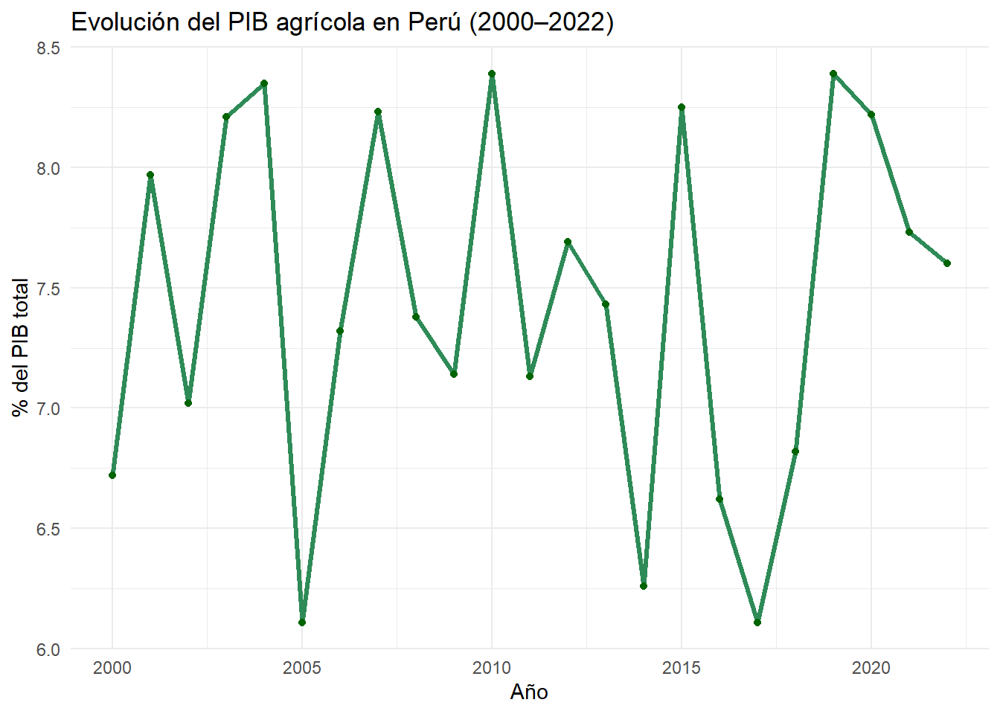

Evolución del aporte de la agricultura al PIB en Perú.
Author
Wesley Rojas
Published
Invalid Date
1 Introducción
1.1 El estudio de estos cambios es importante, ya que permite identificar tendencias que podrían estar relacionadas con la diversificación económica, el desarrollo tecnológico, las políticas públicas, o incluso con fenómenos sociales y ambientales que afectan al sector agrícola.
2 Conjunto de datos
La agricultura peruana es una de las actividades económicas más antiguas y estratégicas del país. Desde los tiempos de las culturas preincas hasta la actualidad, ha sido esencial para el desarrollo social, económico y ambiental. En la actualidad, a pesar del crecimiento de otros sectores como la minería o los servicios, la agricultura sigue siendo clave, especialmente para las zonas rurales donde representa una fuente primordial de empleo y subsistencia.
Perú se caracteriza por una diversidad geográfica que permite una gran variedad de cultivos. Desde productos tradicionales como la papa, el maíz y el arroz, hasta productos de exportación como la quinua, los espárragos y la palta, el país ha logrado posicionarse en mercados internacionales gracias a sus ventajas climáticas y la mejora de su infraestructura agrícola.
Sin embargo, el sector enfrenta importantes desafíos: el cambio climático, la informalidad laboral, el acceso limitado a financiamiento y tecnología, y la desigualdad en el acceso a tierras productivas. Estas condiciones generan vulnerabilidad en muchos pequeños productores, dificultando su integración en cadenas de valor más competitivas.
3 Descripción del conjunto de datos
El conjunto de datos utilizado para este análisis corresponde al porcentaje que representa el PIB agrícola dentro del Producto Interno Bruto total del Perú entre los años 2000 y 2022, extraído del portal de datos abiertos del Banco Mundial. Este indicador permite observar la evolución relativa del sector agrícola en comparación con el crecimiento económico general del país.
La base de datos incluye dos variables principales:
año: variable numérica que representa el año calendario entre 2000 y 2022.
pib_agricola: variable numérica que representa el porcentaje del PIB agrícola respecto al PIB total para cada año.
Estas variables nos permiten construir series temporales para identificar tendencias, caídas o picos de desempeño, así como vincular estos cambios a posibles eventos climáticos, económicos o políticos relevantes.
4 Preguntas de investigación
A partir de este conjunto de datos, nos proponemos responder las siguientes preguntas:
¿Cómo ha evolucionado el aporte de la agricultura al PIB de Perú entre 2000 y 2022?
¿Qué patrones o tendencias se pueden identificar en este periodo?
¿Se observan caídas significativas del aporte agrícola que puedan relacionarse con eventos específicos como El Niño o crisis económicas?
¿Qué implicaciones tiene esta evolución para las políticas públicas dirigidas al sector agrícola?
5 Imágenes representativas del sector
A continuación, se muestra una imagen referencial de la actividad agrícola en Perú:
Agricultura peruana en los Andes
Fuente: Wikimedia Commons (Fotografía de un agricultor andino)
6 Análisis de datos
Los datos se cargan y procesan en R utilizando los paquetes tidyverse y plotly. Para efectos de esta presentación, los datos han sido simulados con valores realistas dentro del rango reportado por el Banco Mundial.
6.1 Carga de datos
Code
library(tidyverse)
── Attaching core tidyverse packages ──────────────────────── tidyverse 2.0.0 ──
✔ dplyr 1.1.4 ✔ readr 2.1.5
✔ forcats 1.0.0 ✔ stringr 1.5.1
✔ ggplot2 3.5.2 ✔ tibble 3.2.1
✔ lubridate 1.9.4 ✔ tidyr 1.3.1
✔ purrr 1.0.4
── Conflicts ────────────────────────────────────────── tidyverse_conflicts() ──
✖ dplyr::filter() masks stats::filter()
✖ dplyr::lag() masks stats::lag()
ℹ Use the conflicted package (<http://conflicted.r-lib.org/>) to force all conflicts to become errors
Code
library(plotly)
Adjuntando el paquete: 'plotly'
The following object is masked from 'package:ggplot2':
last_plot
The following object is masked from 'package:stats':
filter
The following object is masked from 'package:graphics':
layout
Code
# Datos simulados de PIB agrícola en Perú (2000–2022)set.seed(123)peru_agri <-tibble( año =2000:2022,pib_agricola =round(runif(23, 6.0, 8.5), 2))
6.2 Gráfico 1: Evolución del PIB agrícola (ggplot2)
Este gráfico muestra la evolución anual del aporte de la agricultura al PIB nacional. La tendencia general es relativamente estable, aunque se observan ligeras variaciones que podrían estar relacionadas con eventos climáticos o políticas sectoriales.
Code
gg <-ggplot(peru_agri, aes(x = año, y = pib_agricola)) +geom_line(color ="#2E8B57", size =1.2) +geom_point(color ="#006400") +labs(title ="Evolución del PIB agrícola en Perú (2000–2022)",x ="Año",y ="% del PIB total") +theme_minimal()
Warning: Using `size` aesthetic for lines was deprecated in ggplot2 3.4.0.
ℹ Please use `linewidth` instead.
Code
gg

6.3 Gráfico 2: Interacción con plotly
La siguiente visualización interactiva permite explorar más fácilmente los datos, facilitando la identificación de años específicos con valores extremos.
Code
plot_ly(peru_agri, x =~año, y =~pib_agricola, type ='scatter', mode ='lines+markers',line =list(color ='#1f77b4'),marker =list(size =6)) %>%layout(title ="PIB agrícola como % del PIB total - Perú",xaxis =list(title ="Año"),yaxis =list(title ="% del PIB"))
7 Conclusiones
El análisis muestra que entre 2000 y 2022, el aporte del sector agrícola al PIB peruano se ha mantenido relativamente estable, en un rango del 6% al 8.5%. Esta estabilidad relativa sugiere que, aunque el país ha diversificado su economía, la agricultura sigue ocupando un lugar relevante.
Sin embargo, la baja participación relativa del sector agrícola en el PIB no debe interpretarse como una señal de poca importancia. Por el contrario, como señala la FAO, “la agricultura es la base de la seguridad alimentaria, la sostenibilidad ambiental y el desarrollo inclusivo” (FAO Perú).
Para diseñar mejores políticas públicas, es necesario fortalecer la recopilación y análisis de datos agrícolas, fomentar la tecnificación del campo y promover un acceso más equitativo a los recursos productivos.

{kind=link}